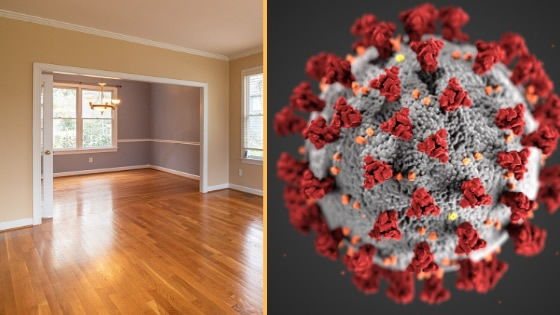
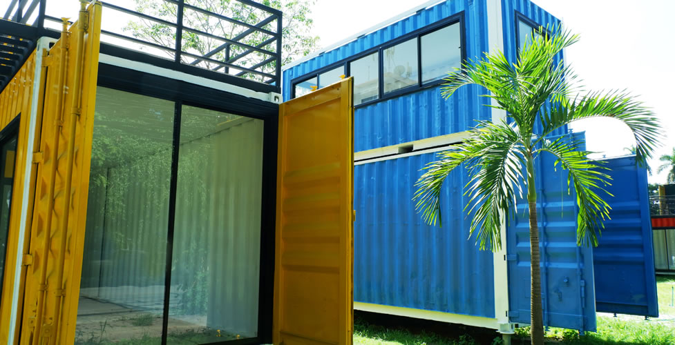

Property Prices in Nairobi

Nairobi is the most cosmopolitan city in Kenya and has the largest population in the country of above 4 million. It has attracted private investors from various parts of the world. This has been due to the high demand of housing and the development of infrastructure.
As a potential investor, you can choose the level of Real Estate you want to invest in, whether you want to service high-end or low-income markets.
Nairobi, being a hub of business and is headquarters to multinational companies and a myriad of international organizations, has been lucrative in real estate investment for both commercial and residential property.
HIGH-END ESTATES
These estates have palatial homes, land compounds, top-level security, well-paved roads, and strict zoning regulations. The average rent in these estates is Kshs 200,000 to KShs 300,000 per month with an average selling price of 60 Million to over 100 Million.
Gigiri and Nyari are examples of such estates with Gigiri being the most expensive estate in Nairobi.
High-end estates are least likely to be affected when the economy is performing poorly.
UPPER MIDDLE – CLASS ESTATES
The difference between these estates and the high end is minimal. Their zoning regulations are a little more relaxed, they have social amenities such as shopping malls and unlike the high end estates they are accessible through private and public transport.
Rent ranges between Kshs 50,000 to Ksh 150,000 per month and the average selling price is between Kshs 12M to Kshs 25 Million depending on the location and number of bedrooms.
Estates such as Kilimani, Ridgeways, and Westlands fall in this category. These estates are also likely to be very affected when the economy is not doing well. Though, at the moment, Kilimani has had an over supply of houses compared to demand leading to a slight reduction in prices.
How to raise money for deposit on your first house
For many of us, owning a home would be a dream come true. It is mostly a dream because the costs of buying a house are huge, especially buying one in a “good neighbourhood”. Despite those challenges, it is very possible to get the process going and achieving your dreams of owning your own home.
After you have identified the house or home you want to buy, you need to look at how to raise a deposit, which usually consists of a percentage of the total cost, lawyer fees, insurance, valuer and taxes. This is especially if you are taking a mortgage. If you are buying in installments, some of those fees can be paid towards the end, but you still need to come up with the deposit amount.
Do not be discouraged about the amounts required for the down-payment. There are many great stories of how others did it successfully.
Have the right mindset is very key, without it, you cannot easily make it. Do not fear, follow some or all of the following ideas, keep your eye on the prize.
1. Cut down your shopping expenses
Closely observe your expenses for a period of 3 months, writing down every small and large expense, including transaction costs, travel, supermarket shopping, green market shopping, even the street vendors expenses. Once you have your 3-month report, scrutinize your monthly expenses with a thick lense to weed out any unnecessary expenses. Proceed to create a lean, mean monthly budget and stick to it.
However, remember to have a small percentage of your income to splurge for entertainment, spend on yourself, or if married take your spouse out at least once a month, and if you have children, do something good for them too. If you don’t have some form of enjoyment, it can become a drag, and you or your spouse may end up even hating the process. I recommend not more than 5% of your income for such in your budget.
2. Move to a cheaper house
Do you really need to be staying in a 3 bedroomed, when you can comfortably fit in a 2 bedroomed? Must you live in that expensive neighborhood? Look at how you much can save by downsizing or downgrading where you stay.
3. Downgrade your car
For many, driving a good car may be a real boost to their self-esteem, and a good massage for their ego. It gives a sense of having “arrived”. But remember that that car you love so much, will one day be an old piece of junk. So why don’t you ditch it for a while, exchange it for a lower maintenance car and eventually you can go back to your nice rides when you have achieved your house owning goal.
4. Create a second income
Supplement your savings using a “side hustle”. Without overthinking, select a side hustle that will not put you in a “conflict of interest position” with your current employment (No need of risking losing your current job). There are many possibilities. Try to get into one that you can do with ease and without too much extra learning, or one that may require several years to reap benefits.
Home Insurance in Kenya

Have you bought a home? Or maybe you are renting one. Either way, you are may have acquired a lot of household goods over the years.
All these can be lost in one fire, burglary, disaster, etc.
This is what is called risk.
You may not always be able to prevent an unfortunate incident, but you can control how far back you will be offset by it. Through buying a home insurance policy, you can recover what you lost and restore your life to almost the way it was.
Types of home insurance.
Expect to be protected against unexpected losses and natural disasters, as follows:
- Damage to the property or buildings
- Loss or damage of the content and personal possessions in your home
It is generally a better idea to combine the two types in one policy since it will end up being cheaper in the long run.
Standard homeowners insurance cover:
- Building structure coverage – renovation and remodeling of your home if damaged or destroyed by natural disasters like storms, fire as mentioned in your policy. What is not covered are disasters from flooding, earthquakes, natural aging
- Personal possessions coverage – Assets such as electronic equipment, furniture, sports gear, kitchen equipment, and other insurables, against destruction, by hurricanes, theft, fired and other insured disasters, up to 70 – 80% of your home.
- Age of the property – Older homes are likely to cost more to insure. Reconstruction costs, cost of fittings and fixtures are important to consider if you are buying an old home
- Roofing – A dilapidated roof is not usually accepted by insurers. If roof is constructed using fireproof materials, you may qualify for a discount
- Living expenses in a temporary house if the disaster happens in your home.
We have partnered with Bismart to provide you with quotations for a comprehensive home insurance policy from the best insurance companies in Kenya. Get options, expert advice and make the move before disaster strikes.
What Covid-19 means for real estate sector in Kenya

Covid-19 came just when the real estate sector was beginning to gain momentum. It has brought with it a change in a lot of dynamics of how people conduct businesses. The coronavirus has brought with it many changes, and every other day could alter our outlook. Many businesses are now transacting online as people turn to the internet for their purchases. Many are anxious and do not know what they should buy, where, whether they should buy anyway.
Some of the frequently raised concerns raised in the past few months are:
- Fear of making investment mistakes
- Borrowing from banks is restricted
- Others are wondering whether to look for a home to buy or to acquire property for investment.
- There are those who are torn between selling underperforming property or keeping them.
What does Covid-19 mean for the real estate sector in Kenya:
1. Limited site visits mean fewer properties are sold.
Real estate is the last business that you can wholly transact online. Somebody must be on the ground to visit the site. With lockdowns, limited movement, and safety concerns, it has become difficult for buyers and agents/sellers to close on property sales. Sellers and buyers do not want to contract the virus, understandably. You need to take strict safety measures as you do your site visits.
2. Building and Construction will take longer
With, again, restricted movement, you find workers may have a problem moving from one location to another. There’s also the issue of moving building materials into or out of locked-down areas. Construction suffers when construction materials cannot be delivered in time.
3. General economic slump
This is both on a national and personal level. Many have lost their incomes, as their jobs face an uncertain future. Some businesses have totally come to a halt, while others are operating on a reduced income capacity. Others may operate normally, and paying their employees as usual, but those who have money are also not spending, they are withholding money out of fear and uncertainty of the future. Construction and mortgage credit may also be harder to access at this period, making real estate development more difficult.
4. Rental Income
Because of the general economic downtime, many tenants have asked for leniency in making their rental payments. This may have the ripple effect of slowing down of investing in rental property. Commercial properties will also lose out heavily, as many businesses close their offices and operate their business from home. Since some use rental income to repay loans used in purchasing or construction of those homes, this spells another doom for the mortgage industry.
Tourism inactivity due to Covid 19 has affected vacation rental income negatively.
Container Houses and Offices

Kenyans are now embracing fabricating shipping containers into homes, offices, and shops. This is indeed a cheaper way to own a home or start a business premise.
Container houses are made using noncorrosive corten steel. It is further coated with ceramic making it resistant from mildew and rust. It, therefore, lasts for a long period of time.
Shipping containers come in two sizes, 20×8 feet and 40×8 feet. To build a bigger home, builders combine containers. In a home with multiple containers, the walls are removed to give a spacious interior. Containers can be stacked to make a multi-level residential home. They can also be twisted to give a striking architectural design.
Container houses can take 2/3 weeks with the shortest taking 10 days to build.
Shipping containers are usually shipped from China. Some organisations can ship a fully fabricated home if you prefer though most organisations sell only shipping containers .
COST OF BUILDING A CONTAINER HOME
Certain dynamics come into play before arriving at the cost of a container home. The size of the container is a huge determinant. The age and condition of the container also determines the cost. Customized features that you choose also determine the cost.
However, a simple office made from a 20 foot would cost KSh600,000 and a 40 foot container office costs Ksh850,000. A self-contained one bedroom costs between Ksh450,000 and Ksh700,000. A two-bedroom that is self-contained costs between Ksh650,000 and Ksh950,000. The costs differ depending on the interior finishes, transportation costs, location, and structural modifications, such as adding balconies.
Alternatives to Investing in Property
Many Real Estate investors are busy people, with little or no time to run other full-time businesses for that extra cash they need to secure their future better. Whereas Real Estate is one of the best passive income opportunities that exist today, there are other passive income opportunities for those who do not have the passion for real estate, or those who want to diversify, and are looking elsewhere.
Here are some passive income alternatives to Real Estate.
1. Unit Trust
Unit Trust is like a chama (pooled investments). It collects money from different investors into a single fund and invests that money in different securities such as bonds and shares depending on the objectives of the fund.
CIC unit trust scheme has the largest portfolio (27.5 billion) followed by Britam unit trust scheme (8.72billion), ICEA unit trust (8.01 billion), CBA unit trust (6.95 billion) Old mutual unit trust (6.28 billion), and Africa Alliance (2.01billion).
2. Venture Capitalism
This is where a group of investors pool funds and place them in a venture capital fund. The fund usually has a committee that carries out in-depth analysis of companies with great potential before investing the pooled funds into these firms in exchange for a sizeable stake in the company.
They offer financing at different stages. For a startup company with a high growth potential they provide seed for growth and if it’s a growing company they fund the growth. They give strategic advice, technical expertise, and monitor the businesses. They have significant control over the business.
They sell their shares back to the founders for a substantial return on investment after the projected period or when the business is going through a merger or acquisition.The amount of money they make when they cash out is determined by the overall performance of the business. Sometimes they also lose on an investment.
Venture capital firms are behind great innovations such as Apple, Facebook, Twitter, and Google. Kenya, South Africa and Nigeria have attracted the highest numbers in Africa in venture capital investments between 2014 and 2019.
3. Nairobi Stock Exchange
This involves buying and selling shares of a company or enterprise registered by the NSE. The money could be from an individual or more than two people in which case the money will be referred to as pooled funds managed by a fund manager. When you buy shares from a company, you are buying part of the company and are referred to as a shareholder. You own the company’s losses and profits. Your profits are equal to the number of shares you bought.
The company usually sells its shares so it can expand and make more profit and by buying these shares you are lending the company money for a profit. You are part of the decision making process.
Shares can be bought or sold through:
- Stockbroker
- Financial advisor
- Online broker
To start trading in stocks you need to have capital, (CDS) Central Deposit and Settlement account that you can open from a brokerage firm or use authorized dealers such as Investment banks, investment advisors, and commercial banks. This account is where your earnings are stored.